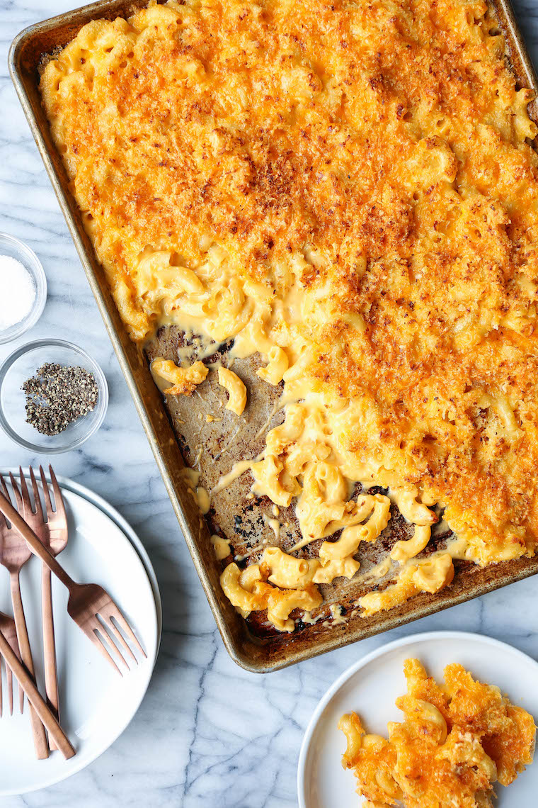

Crowd-pleasing mac and cheese on a sheet pan! Perfectly cheesy and creamy with the maximum amount of crunchy bits. MIND BLOWN.
- 1 pound large elbow macaroni
- 4 tablespoons unsalted butter
- 2 cloves garlic, minced
- 1 medium shallot, minced
- 1/4 cup all-purpose flour
- 1 teaspoon paprika
- 2 cups whole milk
- 1 cup heavy cream
- 2 teaspoons Dijon mustard
- 4 1/2 cups shredded extra-sharp cheddar cheese
- 1/2 cup freshly grated Parmesan
- 1 cup Panko
- Kosher salt and freshly ground black pepper, to taste
- In a large pot of boiling salted water, cook pasta according to package instructions; drain well.
- Preheat oven to broil on high. Arrange an oven rack 6-inches from the broiler. Lightly oil a baking sheet or coat with nonstick spray.
- Melt butter in a large skillet over medium high heat. Add garlic and shallot, and cook, stirring frequently, until fragrant, about 2 minutes.
- Whisk in flour and paprika until lightly browned, about 1 minute. Gradually whisk in milk, heavy cream and Dijon until slightly thickened, about 3-4 minutes. If the mixture is too thick, add more milk as needed; season with salt and pepper, to taste.
- Remove from heat. Stir in 2 1/2 cups cheddar cheese, Parmesan and pasta until well combined; season with salt and pepper, to taste.
- In a small bowl, combine Panko and remaining 2 cups cheddar cheese.
- Spread pasta mixture into the prepared sheet pan; sprinkle with Panko mixture.
- Place into oven and broil, rotating the sheet pan a few times, until golden brown and crispy, about 5-6 minutes.
- Serve immediately.